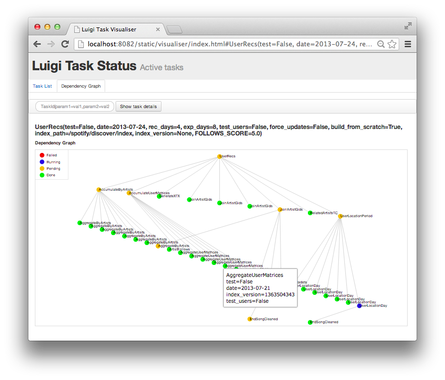

Tutorial: Luigi for Scientific Workflows
This is a Luigi tutorial I held at the e-Infrastructures for Massively parallel sequencing workshop (Video archive ) at SciLifeLab Uppsala in January 2015, moved here for future reference.

What is Luigi?
Luigi is a batch workflow system written in Python and developed by Erik Bernhardson and others at Spotify , where it is used to compute machine-learning powered music recommendation lists, top lists etc.
Luigi is one of not-too-many batch workflow systems that supports running both normal command line jobs and Hadoop jobs in the same (in this tutorial, we will focus only on the command line part).
Luigi workflows are developed in an object oriented fashion in python code, and are executed and controlled from the commandline. But when running, the status of the workflow run can be followed in a web browser, in the graphical web interface that luigi ships with (as demonstrated in the picture above).
Luigi is a little special compared to most other workflow solutions, that the dependency graph is by default defined by hard-coding the upstream dependent task, inside each task. In this regard, luigi tasks are quite similar to functions in functional programming, where each function knows everything needed to provide it's answer, including all the other functions that need to be executed to get there.
There are ways to override these hard-coded dependencies, to create other workflows though, but since workflows in bioinformatics often need more flexibility than that, and need to be easy to augment with e.g. extra filtering steps anywhere in a workflow, we will in this tutorial show how we can extend the "functional" design of luigi, into a more "data flow" like design that most other workflow engines follow.
Some useful resources
- The SciLuigi helper library
- Official luigi documentation
- Luigi project (source code and issue tracker) on Github
- Luigi users mailing list / Google group
- A talk on Luigi by Luigi creator Erik Bernhardson
Tutorial: ​Table of contents
The tutorial is divided into the following sections:
- Installing Luigi
- Defining workflows in Luigi / Hello World
- Adding dependencies and parameters
- Visualizing running workflows (optional)
- Re-using components in multiple workflows
- A solution for multiple inputs and outputs
- Executing commands
UPDATE June 21, 2016: Note that the strategy used in points 5-7 above have been collected into the SciLuigi helper library , which is highly recommended for bioinformatics use cases!
[]{#install}Installing Luigi
1. Install the pyenv python version handler
git clone git://github.com/yyuu/pyenv.git ~/.pyenv
Make pyenv start every time you log in:
echo 'export PYENV_ROOT="$HOME/.pyenv"' >> ~/.bash_profile
echo 'export PATH="$PYENV_ROOT/bin:$PATH"' >> ~/.bash_profile
echo 'eval "$(pyenv init -)"' >> ~/.bash_profile
Important! Reload the bash profile file to enable the new settings:
source ~/.bash_profile
2. Install your own python (version)
Get pyenv to install the python version of your liking.
pyenv install 2.7.6
Make the version you just installed to the standard version for every time you run python.
pyenv global 2.7.6
3. Install luigi and its dependencies
Install the tornado library, which is used in the communication between the luigi scheduler daemon and individual workers:
pip install tornado
Install luigi itself:
pip install luigi
Re-load your ~/.bash_profile, so that the right binaries (such as luigid) are used:
source ~/.bash_profile
[]{#helloworld}Defining workflows in Luigi / Hello World
Luigi basics
Luigi workflows consists more or less of tasks and targets.
Targets are some sort of data that is persisted between task runs. In this tutorial we will only work with luigi.LocalTarget()'s, which are normal files.
Tasks are defined as python classes that subclass the luigi.Task super class. Each task has methods that the workflow designer is supposed to implement:
- requires() - should return one or more instantiated tasks that the current task depends on.
- output() - return one or more targets objects, typically representing files, the the current task will produce when run.
- run() - Here goes all the code that the task should run as its job.
In the run method, this is how we use the inputs and outputs to the task:
- For the input, we use the special input() method, to get the results of the output() function in our parent task (the task that specified in requires()).
- The outputs, we get (as luigi.LocalTarget objects), by simply calling output().
A Hello World task in Luigi
An example of a simple "hello world" luigi task (that just prints "Hello world" in a new file), complete with the code required to run the python file as a luigi script, looks like this:
import luigi
class HelloWorld(luigi.Task):
def requires(self):
return None
def output(self):
return luigi.LocalTarget('helloworld.txt')
def run(self):
with self.output().open('w') as outfile:
outfile.write('Hello World!\n')
if __name__ == '__main__':
luigi.run()
Type this into a file, named, say, luigitutorial.py, and let's try
to run it and see what happens!
(Note that since we don't have any dependencies for this task, we just
return None in the requires() method)
To run the script, there are only two things you have to specify; A
scheduler host to use, and the name of the task to run. For now, lets
just use the "--local-scheduler" option, so that we don't need
to start a new scheduler, and of course, we specify the "HelloWorld"
that we have defined above:
[samuel@milou2 luigitest]$ python luigitutorial.py --local-scheduler HelloWorld
DEBUG: Checking if HelloWorld() is complete
INFO: Scheduled HelloWorld() (PENDING)
INFO: Done scheduling tasks
INFO: Running Worker with 1 processes
DEBUG: Asking scheduler for work...
DEBUG: Pending tasks: 1
INFO: [pid 17513] Worker Worker(salt=160204304, host=milou2.uppmax.uu.se, username=sam***, pid=17513) running HelloWorld()
INFO: [pid 17513] Worker Worker(salt=160204304, host=milou2.uppmax.uu.se, username=sam***, pid=17513) done HelloWorld()
DEBUG: 1 running tasks, waiting for next task to finish
DEBUG: Asking scheduler for work...
INFO: Done
INFO: There are no more tasks to run at this time
INFO: Worker Worker(salt=160204304, host=milou2.uppmax.uu.se, username=sam***, pid=17513) was stopped. Shutting down Keep-Alive thread
Ah, did you notice that "INFO: Done" line there! Seems we are finally set! Let's look if we have any new content in our folder:
[samuel@milou2 luigitest]$ ls -ltr
total 64K
-rw-rw-r-- 1 samuel samuel 677 16 jan 17.52 luigitutorial.py
-rw-rw-r-- 1 samuel samuel 13 16 jan 17.58 helloworld.txt
Ah, cool, we have a new file "helloworld.txt" there! And what does it contain:
[samuel@milou2 luigitest]$ cat helloworld.txt
Hello World!
Yay, exactly what we told it to contain!
Now you can sit back for a moment and contemplate the satisfaction of just having written and ran your very first luigi workflow!

[]{#dependencies_params}Adding dependencies and parameters
To add dependencies between tasks, we need one more task, and we need to return something more than just None in the requires() function of the downstream one. Let's try adding another task,NameSubstituter, that will take the file we created in our HelloWorld task, and replace "World" with some name.
But lets save time and take two steps in one, so let's take the name to substitute with a parameter! So, look at how this looks, in the new NameSubstituter class/task (the HelloWorld task remains unchanged):
import luigi
class HelloWorld(luigi.Task):
def requires(self):
return None
def output(self):
return luigi.LocalTarget('helloworld.txt')
def run(self):
with self.output().open('w') as outfile:
outfile.write('Hello World!\n')
class NameSubstituter(luigi.Task):
name = luigi.Parameter()
def requires(self):
return HelloWorld()
def output(self):
return luigi.LocalTarget(self.input().path + '.name_' + self.name)
def run(self):
with self.input().open() as infile, self.output().open('w') as outfile:
text = infile.read()
text = text.replace('World', self.name)
outfile.write(text)
if __name__ == '__main__':
luigi.run()
Above you can see in the requires() method of the NameSubstituter task, how we return the previous task (HelloWorld in this case) and in the run() method, we open it as our infile, read it, replace "World" with some name that we get from the luigi parameter, and then write it out to the output target of NameSubstituter.
- Stop and think: What will be the file name of the newly generated file, can you see that from the code?
Let's try to run the new task, and see what we get:
[samuel@milou2 luigitest]$ python luigitutorial.py --local-scheduler NameSubstituter
Traceback (most recent call last):
File "luigitutorial.py", line 28, in <module>
luigi.run()
File "/home/samuel/.pyenv/versions/2.7.6/lib/python2.7/site-packages/luigi/interface.py", line 451, in run
tasks = interface.parse(cmdline_args, main_task_cls=main_task_cls)
File "/home/samuel/.pyenv/versions/2.7.6/lib/python2.7/site-packages/luigi/interface.py", line 309, in parse
return self.parse_task(cmdline_args, main_task_cls)
File "/home/samuel/.pyenv/versions/2.7.6/lib/python2.7/site-packages/luigi/interface.py", line 304, in parse_task
task = task_cls.from_str_params(params, Register.get_global_params())
File "/home/samuel/.pyenv/versions/2.7.6/lib/python2.7/site-packages/luigi/task.py", line 382, in from_str_params
value = param.parse_from_input(param_name, params_str[param_name])
File "/home/samuel/.pyenv/versions/2.7.6/lib/python2.7/site-packages/luigi/parameter.py", line 252, in parse_from_input
(param_name, "--" + param_name.replace('_', '-')))
luigi.parameter.MissingParameterException: No value for 'name' (--name) submitted and no default value has been assigned.
Oops! Did you see that last line?
Of course, if we create a parameter to the task, we need to provide the value for the parameter as well! And the output suggests how to do it: Just add "--name <the-value-of-the-parameter>". Let's try again:
[samuel@milou2 luigitest]$ python luigitutorial.py --local-scheduler NameSubstituter --name samuel
DEBUG: Checking if NameSubstituter(name=samuel) is complete
INFO: Scheduled NameSubstituter(name=samuel) (PENDING)
DEBUG: Checking if HelloWorld() is complete
INFO: Scheduled HelloWorld() (DONE)
INFO: Done scheduling tasks
INFO: Running Worker with 1 processes
DEBUG: Asking scheduler for work...
DEBUG: Pending tasks: 1
INFO: [pid 9019] Worker Worker(salt=493027103, host=milou2.uppmax.uu.se, username=sam***, pid=9019) running NameSubstituter(name=samuel)
INFO: [pid 9019] Worker Worker(salt=493027103, host=milou2.uppmax.uu.se, username=sam***, pid=9019) done NameSubstituter(name=samuel)
DEBUG: 1 running tasks, waiting for next task to finish
DEBUG: Asking scheduler for work...
INFO: Done
INFO: There are no more tasks to run at this time
INFO: Worker Worker(salt=493027103, host=milou2.uppmax.uu.se, username=sam***, pid=9019) was stopped. Shutting down Keep-Alive thread
Well, that looks WAY better! (We get that "Done" line in the bottom).
And, we can also have a look at what files have been generated now (we use the -ltr flags, to list files in order of modification time, in ascending order):
[samuel@milou2 luigitest]$ ls -ltr
total 96K
-rw-rw-r-- 1 samuel samuel 748 16 jan 19.28 luigitutorial.py
-rw-rw-r-- 1 samuel samuel 13 16 jan 19.31 helloworld.txt
-rw-rw-r-- 1 samuel samuel 14 16 jan 19.31 helloworld.txt.name_samuel
Did you guess right about the name of that last file?
Did you notice how we simply padded a new string to the file name of the target from our parent task? It turns out that this is in fact a highly useful pattern, since it helps us keep track of what tasks have been ran in order to produce a particular file, and also the values of the parameters to those tasks, if we choose to include them, like we did with the name parameter here.
[]{#visualize}Visualizing running workflows (optional)
Before we go further into more advanced topics, lets see if we can get the web based workflow visualization going, so that we can keep track of what's happening in a visual way!
In order to see what's happening before the workflow is finished, we need to add a little sleep to the tasks, since they are running so fast. So, let's add a sleep of 15 seconds before and after the main chunk of work in each of the tasks:
import luigi
import time
class HelloWorld(luigi.Task):
def requires(self):
return None
def output(self):
return luigi.LocalTarget('helloworld.txt')
def run(self):
time.sleep(15)
with self.output().open('w') as outfile:
outfile.write('Hello World!\n')
time.sleep(15)
class NameSubstituter(luigi.Task):
name = luigi.Parameter()
def requires(self):
return HelloWorld()
def output(self):
return luigi.LocalTarget(self.input().path + '.name_' + self.name)
def run(self):
time.sleep(15)
with self.input().open() as infile, self.output().open('w') as outfile:
text = infile.read()
text = text.replace('World', self.name)
outfile.write(text)
time.sleep(15)
if __name__ == '__main__':
luigi.run()
What we also need to do, in order to view the web UI, is to run the luigi daemon, not just the local-scheduler as before:
So, in a separate terminal / SSH window, start up the daemon:
luigid
Then, in a browser, fire up the following web address:

Then, in a separate terminal window, start the luigi workflow we created above, now specifying "localhost" as our "--scheduler-host":
python luigitutorial.py --scheduler-host localhost NameSubstituter --name YourName
Now, go back to http://localhost:8082 , refresh, and see what you see!
If everything works correctly, you should see something like this:
Click on the button indicated in the screenshot above!
Then you should see something like this, representing a (very minimal) "dependency graph" of our two tasks:
[]{#reuse}Re-using components in multiple workflows
The default way: Sub-classing
The simplest way to re-use luigi components, is to just subclass an existing task class, and override it's requires() method.
See for example this code example, where we have a TaskA and TaskB, and then a TaskC that depends on TaskA.
Then, in the bottom, we have subclassed TaskC into MyTaskC, and by overriding the requires() method, changed the dependency from TaskA to TaskB:
import luigi
class TaskA(luigi.Task):
def requires(self):
return None
def output(self):
return luigi.LocalTarget('task_a')
def run(self):
with self.output().open('w') as outfile:
outfile.write('foo')
class TaskB(luigi.Task):
def requires(self):
return None
def output(self):
return luigi.LocalTarget('task_b')
def run(self):
with self.output().open('w') as outfile:
outfile.write('bar')
class TaskC(luigi.Task):
def requires(self):
return TaskA() # <-- Notice this dependency!
def output(self):
return luigi.LocalTarget(self.input().path + '.task_c')
def run(self):
with self.input().open() as infile, self.output().open('w') as outfile:
for line in infile:
outfile.write(line)
# Let's create an own "copy" of TaskC, that depends on TaskB instead of TaskA:
class MyTaskC(TaskC):
def requires(self):
return TaskB() # <-- Notice how we switched the dependency in TaskC!
if __name__ == '__main__':
luigi.run()
Try now to run this workflow, by executing the last task in the workflow:
[samuel]$ python luigi_reuse_depinject.py --local-scheduler TaskC
An other, more dynamic, way
The default way of re-using luigi tasks, by sub-classing, as demonstrated above, but for reasons we will not go into depth about here (but that you can read more about in this blog post ), we need a more flexible and dynamic way of building up workflows based on existing luigi tasks.
Based on our experimentation, we have found that the following method works very well:
import luigi
class TaskA(luigi.Task):
def requires(self):
return None
def output(self):
return luigi.LocalTarget('task_a')
def run(self):
with self.output().open('w') as outfile:
outfile.write('foo')
class TaskB(luigi.Task):
def requires(self):
return None
def output(self):
return luigi.LocalTarget('task_b')
def run(self):
with self.output().open('w') as outfile:
outfile.write('bar')
class TaskC(luigi.Task):
upstream_task = luigi.Parameter(default=TaskA()) # <-- Notice how we set the upstream dependency as a luigi task!
def requires(self):
return self.upstream_task # <-- Notice this dependency!
def output(self):
return luigi.LocalTarget(self.input().path + '.task_c')
def run(self):
with self.input().open() as infile, self.output().open('w') as outfile:
for line in infile:
outfile.write(line)
# Let's create a workflow task "MyWorkflow", that requires TaskC, but with a
# different upstream dependency (TaskB) instead of the default TaskA
class MyWorkflow(luigi.Task):
def requires(self):
return TaskC(
upstream_task=TaskB() # <-- Notice how we switched the dependency in TaskC!
)
def output(self):
return self.input()
if __name__ == '__main__':
luigi.run()
Notice in TaskC above, how we are taking the upstream dependency as a parameter, rather than hard-coding it! This makes it possible to change how the workflow is connected together, at any time.
Notice also, in the MyWorkflow task, how we have created this task just for the sake of encapsulating the workflow - it does not even implement any run() method!
Try now, after deleting the previously created output, to run this workflow, by executing our new and special "workflow task", MyWorkflow:
[samuel]$ python luigi_reuse_depinject.py --local-scheduler MyWorkflow
... and verify that the result is still the same!
A note on passing parameters
You might not have realized it yet, but the second method will prove to be much much preferable to the first one for a number of reasons. One of those reasons is that for tasks that take parameters, it will be much easier to create modular workflows that don't require changes in any of the tasks themselves, when re-using tasks in new workflows.
Consider the following (sketchy) example luigi workflow, created using the first, sub-classing, approach:
class TaskA(luigi.Task):
param1 = luigi.Parameter()
...
class TaskB(luigi.Task):
param1 = luigi.Parameter()
param2 = luigi.Parameter()
def requires(self):
return TaskA(param1=self.param1)
...
class TaskC(luigi.Task):
param1 = luigi.Parameter()
param2 = luigi.Parameter()
param3 = luigi.Parameter()
def requires(self):
return TaskA(param1=self.param1,
param2=self.param2)
...
class TaskD(luigi.Task):
param1 = luigi.Parameter()
param2 = luigi.Parameter()
param3 = luigi.Parameter()
param4 = luigi.Parameter()
def requires(self):
return TaskA(param1=self.param1,
param2=self.param2,
param3=self.param3)
...
Do you notice how parameters introduced higher up in the "workflow graph", have to be duplicated all the way down to the last task, TaskD, and passed along, through all intermediate tasks?
Can you imagine what happens e.g. if we want to add an existing task somewhere in the middle, e.g. between TaskB and TaskC? - Then we need to firstly add all the parameters which need just need to "pass through" this task, until it reaches its upstream goal. But secondly, if that new task takes any parameters, we will also need to duplicate those parameters in all downstream tasks (in this case TaskC and TaskD), in order to be able to execute the whole workflow?
Do you see how the tasks are no longer interchangeable, and truly modular?
Then, consider the following workflow, where instead, each task just contains its own parameter(s), and those parameters are only duplicated (once) if / when the task is used in a "workflow task", along the line of our example further above:
class TaskA(luigi.Task):
param1 = luigi.Parameter()
...
class TaskB(luigi.Task):
param2 = luigi.Parameter()
...
class TaskC(luigi.Task):
param3 = luigi.Parameter()
...
class TaskD(luigi.Task):
param4 = luigi.Parameter()
...
class MyWorkflow(luigi.Task):
param1 = luigi.Parameter()
param2 = luigi.Parameter()
param3 = luigi.Parameter()
param4 = luigi.Parameter()
def requires(self):
task_a = TaskA(
param1 = self.param1)
task_b = TaskB(
upstream_task = task_a
param2 = self.param2)
task_c = TaskC(
upstream_task = task_b
param3 = self.param3)
task_d = TaskD(
upstream_task = task_c
param4 = self.param4)
return task_d
def output(self):
return self.input()
Do you see now how the tasks themselves never need to change, and so become completely modular, easy to stitch in to any workflow?
(We will continue improving on this scheme in the next section, where we look at how to handle multiple inputs and outputs to tasks)
[]{#multi_input_output}A solution for multiple inputs and outputs
One can return multiple outputs (and take multiple inputs) in tasks in luigi, by letting the output() function of a task return a list, but even better, a dict, with luigi.Target()'s.
Below is an example of how TaskB can depend on two outputs from TaskA (So TaskA 's two outputs, become TaskB 's two inputs):
import luigi
class TaskA(luigi.Task):
def requires(self):
return None
def output(self):
return {'output1' : luigi.LocalTarget('task_a_out1'),
'output2' : luigi.LocalTarget('task_a_out2')}
def run(self):
with self.output().open('w') as outfile:
outfile.write('foo\n')
class TaskB(luigi.Task):
def requires(self):
return TaskA()
def output(self):
return luigi.LocalTarget('task_a')
def run(self):
with self.input()['output1'].open() as infile1: # Notice how we need to know the name of TaskA's output
with self.input()['output2'].open() as infile2: # ... and same here ...
with self.output().open('w') as outfile:
for line in infile1:
outfile.write(line)
for line in infile2:
outfile.write(line)
if __name__ == '__main__':
luigi.run()
But, do you notice anything strange here?
Do you notice how, in the run() method of TaskB, we have to know the names of the outputs of TaskA ... which is of course less than optimal, since now we have to know internals of another task inside our task. Then our tasks are no longer independent and truly modular.
But this is not even the worst we can get ... look at what happens when one task (TaskC in this case) depends on TWO upstream tasks, EACH OF WHICH returns two outputs. Then we have to look up two dict structures (the dict returned from our requires() method, and the one returned from each upstream tasks output() function):
import luigi
class TaskA(luigi.Task):
def requires(self):
return None
def output(self):
return {'output1' : luigi.LocalTarget('task_a_out1'),
'output2' : luigi.LocalTarget('task_a_out2')}
def run(self):
with self.output()['output1'].open('w') as outfile:
outfile.write('foo\n')
with self.output()['output2'].open('w') as outfile:
outfile.write('foo\n')
class TaskB(luigi.Task):
def requires(self):
return None
def output(self):
return {'output1' : luigi.LocalTarget('task_b_out1'),
'output2' : luigi.LocalTarget('task_b_out2')}
def run(self):
with self.output()['output1'].open('w') as outfile:
outfile.write('bar\n')
with self.output()['output2'].open('w') as outfile:
outfile.write('bar\n')
class TaskC(luigi.Task):
def requires(self):
return {'input_a' : TaskA(),
'input_b' : TaskB()}
def output(self):
return luigi.LocalTarget(self.input()['input_a']['output1'].path + '.task_c')
def run(self):
with self.input()['input_a']['output1'].open() as infile_a1: # Notice how we need to know the name of TaskA's output
with self.input()['input_a']['output2'].open() as infile_a2: # ... and same here ...
with self.input()['input_b']['output1'].open() as infile_b1: # Notice how we need to know the name of TaskA's output
with self.input()['input_b']['output2'].open() as infile_b2: # ... and same here ...
with self.output().open('w') as outfile:
for line in infile_a1:
outfile.write(line)
for line in infile_a2:
outfile.write(line)
for line in infile_b1:
outfile.write(line)
for line in infile_b2:
outfile.write(line)
if __name__ == '__main__':
luigi.run()
(notice the double dict look ups, in the run method ... for example self.input()['input_a']['output1'].open() as infile_a1 ... I guess you can notice how this also gets rather messy after a while)
A solution
The way we have found to work around this, is the following:
- Don't send upstream dependencies as parameters, like we suggested in an earlier section.
- Instead, just send (as a parameter) a dict-structure containing the upstream task, and the name of the output, to "plug into" this task.
- Make one such parameter per "input" that the task will use.
- Create a special method get_input(), stored in a meta class, that can be used to retrieve the correct input, based on the dict structures sent as parameters.
Part of what we solve here, is also that, instead of specifying dependencies between tasks, we specify how tasks depend on, and export, targets.
Let's look at how our solution looks in code:
###### Meta class ######
class DependencyMetaTask(luigi.Task):
# METHODS FOR AUTOMATING DEPENDENCY MANAGEMENT
def requires(self):
upstream_tasks = []
for param_val in self.param_args:
if type(param_val) is dict:
if 'upstream' in param_val:
upstream_tasks.append(param_val['upstream']['task'])
return upstream_tasks
def get_input(self, input_name):
param = self.param_kwargs[input_name]
if type(param) is dict and 'upstream' in param:
return param['upstream']['task'].output()[param['upstream']['port']]
else:
return param
###### Normal classes ######
class TaskA(DependencyMetaTask):
# INPUT TARGETS
in1_target = luigi.Parameter()
param_a1 = luigi.Parameter()
# DEFINE OUTPUTS
def output(self):
return { 'out1' :
luigi.LocalTarget(
self.get_input('in1_target').path + '.out1'),
'out2' :
luigi.LocalTarget(
self.get_input('in1_target').path + '.out2') } }
# WHAT THE TASK DOES
def run(self):
with open(self.get_input('in1_target').path) as infile:
for line in infile:
do_something(line)
class TaskB():
# INPUT TARGETS
in1_target = luigi.Parameter()
in2_target = luigi.Parameter()
param_b1 = luigi.Parameter()
param_b2 = luigi.Parameter()
def run(self):
# Do something with both in1 and in2
....
##### THE ACTUAL WORKFLOW / DEPENDENCY GRAPH DEFINITION #####
class MyWorkFlow(luigi.Task):
# We only need to duplicate all parameters
# once, which is here in the workflow task
param_a1 = luigi.Parameter()
param_b1 = luigi.Parameter()
param_b2 = luigi.Parameter()
# Here the whole workflow definition resides:
def requires(self):
task_a = TaskA(
param_a1 = self.param_a1
)
task_b = TaskB(
param_b1 = self.param_b1,
param_b2 = self.param_b2,
# Here below, we connect the output out1 from TaskA
# to in1_target of TaskB ...
in1_target =
{ 'upstream' : { 'task' : task_a,
'port' : 'out1' } }
# ... and again, out2 of TaskA, to in2_target of
# TaskB, using our special syntax.
in2_target =
{ 'upstream' : { 'task' : task_a,
'port' : 'out2' } }
)
So, can you follow what happens here?
The key here is the get_input() method in the DependencyMetaTask meta class. It allows us to send as parameters to tasks, a double dict structure looking like so:
some_target = { 'upstream' : { 'task' : TaskA() , 'port' : 'output1' } }
... just a little differently formatted above.
Then, as you can see in the run() method of TaskA above, we can just use the get_input() function to get a specific input target (and not just a dependent task, or dict of tasks, like with the normal input() method).
Maybe you also notice that this lets us do all the wiring of how outputs from TaskA is mapped to "inputs" (those special parameters which take a specification for how to find a certain target), in TaskB. In effect we have separated the workflow definition from the tasks themselves, and thereby made the tasks wholly independent and truly modular, just as we sought to do.
[]{#commands}Executing commands
In Luigi, it is very easy to implement a task's run() method with just some python code that does something.
But in bioinformatics, most of the time we want to execute some external program, that is accessible only via its command line interface.
This is also no problem in python, as you might expect, but we have found that creating some small helper functions can help a lot in making this easier to work with.
We typically create a MetaTask or Mixin, with helper functions such as one for executing commands, and let all tasks subclass (or "mix in" the mixin). Below you find our implementation of a helper function for executing commands, and how to use it:
import luigi
import commands
class TaskHelpers():
# We here show the simplest version needed to execute commands in our preferred way:
def execute_command(self, command):
return commands.getstatusoutput(command)
# And we can also have a really short "alias" of the execute_command method
def x(self, command):
return self.execute_command(command)
# Then we can use the above TaskHelper mixin, like this (taken from a real-world example):
class GenerateFingerPrint(luigi.Task, TaskHelpers):
# INPUT TARGETS
dataset_target = luigi.Parameter()
# PARAMETERS
fingerprint_type = luigi.Parameter()
# DEFINE OUTPUTS
def output(self):
return { 'fingerprints' : luigi.LocalTarget(self.get_input('dataset_target').path + '.' + self.fingerprint_type + '.csr') }
def run(self):
self.x([JAVA_PATH, '-jar jars/FingerprintsGenerator.jar',
'-fp', self.fingerprint_type,
'-inputfile', self.get_input('dataset_target').path,
'-parser', '1',
'-outputfile', self.output()['fingerprints'].path])
In the run method of the GenerateFingerPrint task, you see how we can execute commands by sending a python list of command parts, to the x() method, for execution (we could send a string as well, but a list of command parts has turned out to be easier to work with, when many of the parts are dynamically generated from input file names, parameters etc.)
So, this last example show a pretty authentic real-world example of how we are using Luigi at UU/Dept. of Pharmaceutical Bio sciences .